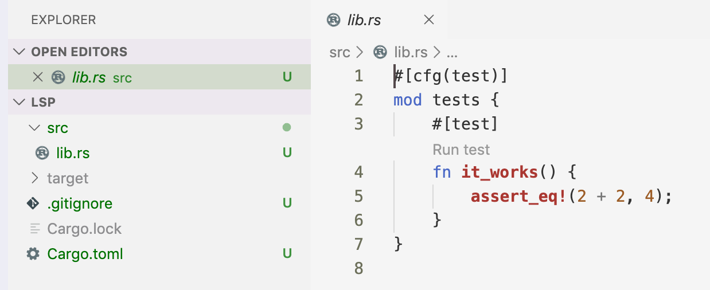

Exercício Maior Produto de uma Série
Este exercício é retirado do site exercism.io da track de Rust, e em inglês é chamado de Largest Series Product. Ele consiste no seguinte problema:
Dada uma string de dígitos, calcular o maior produto contínuo de uma substring de tamanho
n. Por exemplo, para a string"1027839564"o maior produto comn = 3seria9 * 5 * 6 = 270, e o maior produto paran = 5seria7 * 8 * 3 * 9 * 5 = 7560.
Você pode utilizar a ferramenta do exercism.io para realizar as configurações deste exercício. Para isso, pule para o subcapítulo Resolvendo o primeiro teste. Bom, a primeira coisa que precisamos fazer é criar uma lib para rodar esses testes. Para isso, executamos em nosso terminal cargo new largest-series-product --lib && cd largest-series-product. Abra em seu editor favorito e seu projeto deverá ser da seguinte forma:

Agora, precisamos criar uma pasta para conter todos os testes, a pasta tests. O padrão em Rust é que os testes de integração fiquem na pasta tests enquanto os testes unitários fiquem junto ao arquivo. Como o exercism já nos dispõe um conjunto bom de testes, podemos simplesmente colar eles no caminho tests/largest-series-product.rs. Os testes são:
#![allow(unused)] fn main() { use largest_series_product::*; #[test] fn return_is_a_result() { assert!(lsp("29", 2).is_ok()); } #[test] #[ignore] fn find_the_largest_product_when_span_equals_length() { assert_eq!(Ok(18), lsp("29", 2)); } #[test] #[ignore] fn find_the_largest_product_of_two_with_numbers_in_order() { assert_eq!(Ok(72), lsp("0123456789", 2)); } #[test] #[ignore] fn find_the_largest_product_of_two_with_numbers_not_in_order() { assert_eq!(Ok(48), lsp("576802143", 2)); } #[test] #[ignore] fn find_the_largest_product_of_three_with_numbers_in_order() { assert_eq!(Ok(504), lsp("0123456789", 3)); } #[test] #[ignore] fn find_the_largest_product_of_three_with_numbers_not_in_order() { assert_eq!(Ok(270), lsp("1027839564", 3)); } #[test] #[ignore] fn find_the_largest_product_of_five_with_numbers_in_order() { assert_eq!(Ok(15120), lsp("0123456789", 5)); } #[test] #[ignore] fn span_of_six_in_a_large_number() { assert_eq!( Ok(23520), lsp("73167176531330624919225119674426574742355349194934", 6) ); } #[test] #[ignore] fn returns_zero_if_number_is_zeros() { assert_eq!(Ok(0), lsp("0000", 2)); } #[test] #[ignore] fn returns_zero_if_all_products_are_zero() { assert_eq!(Ok(0), lsp("99099", 3)); } #[test] #[ignore] fn a_span_is_longer_than_number_is_an_error() { assert_eq!(Err(Error::SpanTooLong), lsp("123", 4)); } // There may be some confusion about whether this should be 1 or error. // The reasoning for it being 1 is this: // There is one 0-character string contained in the empty string. // That's the empty string itself. // The empty product is 1 (the identity for multiplication). // Therefore LSP('', 0) is 1. // It's NOT the case that LSP('', 0) takes max of an empty list. // So there is no error. // Compare against LSP('123', 4): // There are zero 4-character strings in '123'. // So LSP('123', 4) really DOES take the max of an empty list. // So LSP('123', 4) errors and LSP('', 0) does NOT. #[test] #[ignore] fn an_empty_string_and_no_span_returns_one() { assert_eq!(Ok(1), lsp("", 0)); } #[test] #[ignore] fn a_non_empty_string_and_no_span_returns_one() { assert_eq!(Ok(1), lsp("123", 0)); } #[test] #[ignore] fn empty_string_and_non_zero_span_is_an_error() { assert_eq!(Err(Error::SpanTooLong), lsp("", 1)); } #[test] #[ignore] fn a_string_with_non_digits_is_an_error() { assert_eq!(Err(Error::InvalidDigit('a')), lsp("1234a5", 2)); } }
Vamos explicar rapidamente o que estamos vendo aqui. A primeira linha contém use largest_series_product::*;, isso corresponde a uma diretiva de importar todas as funcionalidades (::*) do pacote largest_series_product. Poderíamos importar somente a diretiva lsp com use largest_series_product::lsp; ou mais de uma diretiva com use largest_series_product::{lsp, db::xps}. Note que a diretiva xps vem de um pacote interno chamado db. Nas linhas seguintes, percebemos as anotações #[test] e #[ignore], consideradas atributos que indicam como essa função deve se comportar. No caso do atributo #[test], a função descrita a seguir executará somente com a execução de testes no cargo test, enquanto o atributo #[ignore], pulará esse teste. Depois disso, temos a declaração de uma função com o seguinte formato:
#![allow(unused)] fn main() { fn nome_da_funcao_em_snake_case() { //corpo da funcnao // ... } pub fn nome_da_funcao_em_snake_case(arg1: TArgs1, arg2: TArgs2, // ... argn: TArgsn) -> TResposta { //corpo da funcnao // ... } }
Em Rust, a declaração de uma função começa com a palavra-chave fn seguida pelo nome da função em snake_case. Caso existam, os argumentos são separados como argumento: TipoDoArgument e, caso a função retorne algum tipo, se adiciona a linha -> TipoDeRetorno. A última linha da função, caso não tenha ; no final é sempre retornada. Agora para o corpo da função de teste vemos assert!(lsp("29", 2).is_ok());. assert! e assert_eq! são macros de teste de assertividade, isso quer dizer que assert! retorna verdade caso o argumento dentro de seu corpo seja verdadeiro, como lsp de 29 e duas casas é do tipo Ok (lsp("29", 2).is_ok()), e assert_eq! recebe dois argumentos, separados por vírgula e procura igualdade e identidade entre eles.
Resolvendo o primeiro teste
Vamos para a primeira função que temos e vamos tentar dissecá-la:
#![allow(unused)] fn main() { #[test] fn return_is_a_result() { assert!(lsp("29", 2).is_ok()); } }
Sabemos que é uma função de teste, #[test], e que existe uma chamada para função lsp que recebe dois argumentos, "29" (um &str) e 2 (um inteiro). Além disso, sabemos que retorna um tipo Result, pois estamos esperando um resultado do tipo Ok. Para este teste passar precisamos fazer muito pouco, assim a implementação dele passa a ser:
#![allow(unused)] fn main() { #[derive(Debug, PartialEq)] pub enum Error { SpanTooLong, InvalidDigit(char), } pub fn lsp(_: &str, _: usize) -> Result<u64, Error> { Ok(0u64) } }
Tanto faz o valor que retornamos para esse teste, pois somente queremos saber se é Ok(). Agora removemos o #[ignore] do teste a seguir e mudamos nosso Ok(0u64) para Ok(18u64):
#![allow(unused)] fn main() { #[test] fn find_the_largest_product_when_span_equals_length() { assert_eq!(Ok(18), lsp("29", 2)); } }
O próximo teste nos exige um pouco mais:
#![allow(unused)] fn main() { #[test] fn find_the_largest_product_of_two_with_numbers_in_order() { assert_eq!(Ok(72), lsp("0123456789", 2)); } }
Para este teste podemos pegar os dois últimos números da string e multiplicá-los.
#![allow(unused)] fn main() { pub fn lsp(string_digits: &str, _: usize) -> Result<u64, Error> { let mut digits: Vec<u64> = string_digits .split("") .map(|s| s.parse()) .filter(|s| match s { Ok(_) => true, Err(_) => false, }) .map(|s| s.unwrap()) .collect(); digits.reverse(); Ok(digits.iter().take(2).fold(1u64, |acc, i| acc * i)) } }
Como sabemos que os dois últimos dígitos de ambos os casos são o maior produto, não precisamos nos preocupar muito com o resto. Assim, aplicamos a função split("") ao valor de entrada, que gerará um vetor contendo cada um dos elementos, como vec!["2", "9"], para o caso do "29". Depois aplicamos um parse deles para o tipo inferido em let mut digits: Vec<u64> =, filtramos para evitar elementos que resultaram em Err e assim podemos utilizar o unwrap sem problemas. Coletamos tudo com o collect e revertemos a lista para obter somente os dois primeiros elementos, que após o reverse passaram de últimos a primeiros. Depois aplicamos o .fold(1u64, |acc, i| acc * i)), que inicia a multiplicação com um 1u64, e depois multiplicamos cada um deles pelo acumulador acc. Tudo isso envolvido em um Ok(). Existem formas mais simples de resolver esse problema em Rust, como o uso de slices, mas acredito que seja uma boa solução para quem precisa revisar a linguagem.
Ao rodarmos o próximo teste, podemos perceber que nossa estratégia falha e que novas implementações são necessárias:
#![allow(unused)] fn main() { #[test] fn find_the_largest_product_of_two_with_numbers_not_in_order() { assert_eq!(Ok(48), lsp("576802143", 2)); } }
Felizmente parte de nossa solução, a variável digits, já é bastante útil, pois converteu a &str em um vetor de u64. Agora precisamos de uma função que atue sobre os vetores e agrupe-os de dois em dois. Para poupar nosso tempo, a implementacão de Vec em Rust já possui uma função assim, ela chama window e recebe como argumento um self e um span do tipo usize, retornando um Window<T>, no qual T representa um genérico correspondente ao tipo do vetor. A struct Window<T> corresponde a um iterável com valores internos do tipo slice com o tamanho de cada slice do valor span usize, se fossemos comparar a um vetor seria um vec![ &["a", "b"], &["b", "c"], &["c", "d"], // ...] para o afaltabeto separado 2usize. Agora, precisamos de uma função que nos retorne o valor de cada Window e ordene os valores de forma que o maior seja o primeiro ou o último. Chamei essa função de window_values, e ela recebe como argumento o vetor que criamos anteriormente, digits: Vec<u64>:
#![allow(unused)] fn main() { pub fn lsp(string_digits: &str, _: usize) -> Result<u64, Error> { let digits: Vec<u64> = string_digits .split("") .map(|s| s.parse()) .filter(|s| match s { Ok(_) => true, Err(_) => false, }) .map(|s| s.unwrap()) .collect(); Ok(window_values(digits) .first() .unwrap() .to_owned()) } fn window_values(digits: Vec<u64>) -> Vec<u64> { let mut window_values = digits .windows(2usize) .map(|w| w.to_vec()) .map(|v| v.iter().fold(1,|acc, i| acc * i)) .collect::<Vec<u64>>(); window_values.sort(); window_values.reverse(); window_values } }
Note que a função lsp não mudou muito, o que mudou nela é que chamamos a função window_values com o digits, que deixou de ser mutável. Na função window_values, estamos criando windows de tamanho 2usize, depois aplicando map para converter o tipo &[T;usize] em vetor e, no map seguinte, transformamos esse vetor gerado em um iterável que consome eles em um fold de multiplicação. Depois ordenamos a lista de maior para menor, e depois revertemos para termos o maior produto como primeiro elemento (podíamos deixar sem o reverse e aplicar um last em vez de first à solução da função). A chamada de função to_owned ocorre porque o resultado do first é um borrow, ou seja &u64 e precisamos de um u64.
O próximo teste inclui apenas uma diferença: o valor de span deixa de ser 2 e passa a ser 3. Para isso, precisamos passar span como argumento para window_values.
#![allow(unused)] fn main() { #[test] fn find_the_largest_product_of_three_with_numbers_in_order() { assert_eq!(Ok(504), lsp("0123456789", 3)); } }
Agora a solução passa a ser (note o valor span adicionado nas funções):
#![allow(unused)] fn main() { pub fn lsp(string_digits: &str, span: usize) -> Result<u64, Error> { let digits: Vec<u64> = string_digits .split("") .map(|s| s.parse()) .filter(|s| match s { Ok(_) => true, Err(_) => false, }) .map(|s| s.unwrap()) .collect(); Ok(window_values(digits, span) .first() .unwrap() .to_owned()) } fn window_values(digits: Vec<u64>, span: usize) -> Vec<u64> { let mut str_chunks = digits .windows(span) .map(|x| x.to_vec()) .map(|i| i.iter().fold(1,|acc, x| acc * x)) .collect::<Vec<u64>>(); str_chunks.sort(); str_chunks.reverse(); str_chunks } }
Com essas mudanças, os próximos três testes passam sem grandes esforços:
#![allow(unused)] fn main() { #[test] fn find_the_largest_product_of_three_with_numbers_not_in_order() { assert_eq!(Ok(270), lsp("1027839564", 3)); } #[test] fn find_the_largest_product_of_five_with_numbers_in_order() { assert_eq!(Ok(15120), lsp("0123456789", 5)); } #[test] fn span_of_six_in_a_large_number() { assert_eq!( Ok(23520), lsp("73167176531330624919225119674426574742355349194934", 6) ); } }
Os testes seguintes também passam, mas quis separá-los para chamar a atenção em relação aos 0:
#![allow(unused)] fn main() { #[test] fn returns_zero_if_number_is_zeros() { assert_eq!(Ok(0), lsp("0000", 2)); } #[test] fn returns_zero_if_all_products_are_zero() { assert_eq!(Ok(0), lsp("99099", 3)); } }
Agora, o próximo teste já falha, pois apesar de termos a implementação do tipo Error, não estamos usando o Error. Note que o teste consiste em retornar um Resultwindow ser maior que o tamanho total das strings:
#![allow(unused)] fn main() { #[test] fn a_span_is_longer_than_number_is_an_error() { assert_eq!(Err(Error::SpanTooLong), lsp("123", 4)); } }
Agora precisamos adicionar um if que valida se o tamanho da string é maior que o tamanho da window. span > string_digits.len() e que caso verdadeiro retorne Err(Error::SpanTooLong):
#![allow(unused)] fn main() { pub enum Error { SpanTooLong, InvalidDigit(char), } pub fn lsp(string_digits: &str, span: usize) -> Result<u64, Error> { if span > string_digits.len() { return Err(Error::SpanTooLong); } let digits: Vec<u64> = string_digits .split("") .map(|s| s.parse()) .filter(|s| match s { Ok(_) => true, Err(_) => false, }) .map(|s| s.unwrap()) .collect(); Ok(window_values(digits, span) .first() .unwrap() .to_owned()) } // ... }
Os próximos dois testes se referem à mesma coisa. Se o valor do span for zero, o resultado sempre será Ok(1u64):
#![allow(unused)] fn main() { #[test] fn an_empty_string_and_no_span_returns_one() { assert_eq!(Ok(1), lsp("", 0)); } #[test] fn a_non_empty_string_and_no_span_returns_one() { assert_eq!(Ok(1), lsp("123", 0)); } }
Para resolver esse teste basta adicionar mais um if, if span == 0 { return Ok(1u64); }:
#![allow(unused)] fn main() { pub fn lsp(string_digits: &str, span: usize) -> Result<u64, Error> { if span > string_digits.len() { return Err(Error::SpanTooLong); } else if span == 0 { return Ok(1u64); } let digits: Vec<u64> = string_digits .split("") .map(|s| s.parse()) .filter(|s| match s { Ok(_) => true, Err(_) => false, }) .map(|s| s.unwrap()) .collect(); Ok(window_values(digits, span) .first() .unwrap() .to_owned()) } // ... }
Além disso, o teste seguinte também passa:
#![allow(unused)] fn main() { #[test] fn empty_string_and_non_zero_span_is_an_error() { assert_eq!(Err(Error::SpanTooLong), lsp("", 1)); } }
O próximo e último teste traz um novo conceito: falha por conta de um dígito não válido, como um caractere alfabético. Vamos incluir este caractere como argumento do erro:
#![allow(unused)] fn main() { #[test] fn a_string_with_non_digits_is_an_error() { assert_eq!(Err(Error::InvalidDigit('a')), lsp("1234a5", 2)); } }
Para resolver esse teste precisamos fazer um match por tipos alfabéticos e retornar o primeiro que falha. O if que garante que existe uma falha é if string_digits.matches(char::is_alphabetic).collect::<Vec<&str>>().len() > 0 e assim bastaria adicionar o seguinte código a lsp:
#![allow(unused)] fn main() { pub fn lsp(string_digits: &str, span: usize) -> Result<u64, Error> { if span > string_digits.len() { return Err(Error::SpanTooLong); } else if span == 0 { return Ok(1u64); } else if string_digits.matches(char::is_alphabetic).collect::<Vec<&str>>().len() > 0 { let digit = string_digits.matches(char::is_alphabetic).collect::<Vec<&str>>(); return Err(Error::InvalidDigit(digit .first().unwrap() .to_owned() .to_string() .pop().unwrap())); } let digits: Vec<u64> = string_digits .split("") .map(|s| s.parse()) .filter(|s| match s { Ok(_) => true, Err(_) => false, }) .map(|s| s.unwrap()) .collect(); Ok(window_values(digits, span) .first() .unwrap() .to_owned()) } }
Assim, com o resultado de string_digits.matches(char::is_alphabetic).collect::<Vec<&str>>() podemos obter o primeiro com first, e depois aplicar o pop para retirar o valor de char. Além disso, podemos perceber que a conta string_digits.matches(char::is_alphabetic).collect::<Vec<&str>>() está sendo executada duas vezes, assim podemos extrair para um valor, v_alphanumeric, antes dos ifs/elses:
#![allow(unused)] fn main() { pub fn lsp(string_digits: &str, span: usize) -> Result<u64, Error> { let v_alphanumeric = string_digits.matches(char::is_alphabetic).collect::<Vec<&str>>(); if span > string_digits.len() { return Err(Error::SpanTooLong); } else if span == 0 { return Ok(1u64); } else if v_alphanumeric.len() > 0 { return Err(Error::InvalidDigit(v_alphanumeric .first().unwrap() .to_owned() .to_string() .pop().unwrap())); } // ... } }
Agora que revisamos Rust podemos iniciar nosso primeiro serviço.